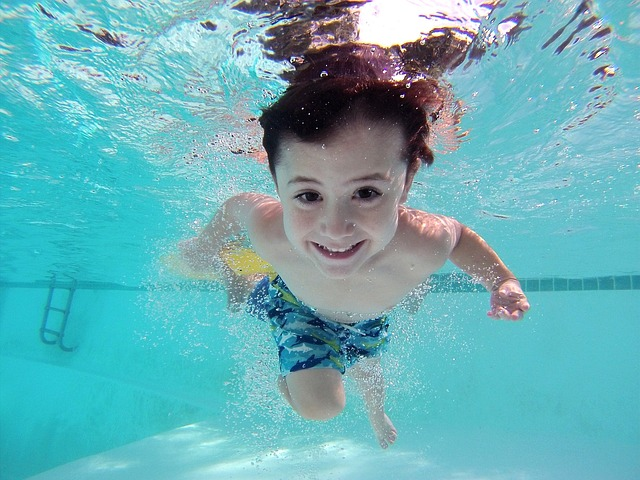

Här finns allt från äventyrsbad, motionssim, hopp- och plaskbassäng till en relaxavdelningen med en varmare bassäng och bubbelpool. Under sommaren öppnar vi uteområdet med flera utomhusbassänger.
Under vardagar tränar simhopparna i Tucaryds Simsällskap i hoppbassängen. På lördag och söndagar, samt tävlingsfria helger är bassängen öppen för badgäster. Vill du utmana dig själv? Här finns nio olika uthopp varav det högsta på tio meter. En trappa ned finns ett undervattensfönster där nedslaget kan studeras av andra.
Klicka här för att komma till vår hemsida 